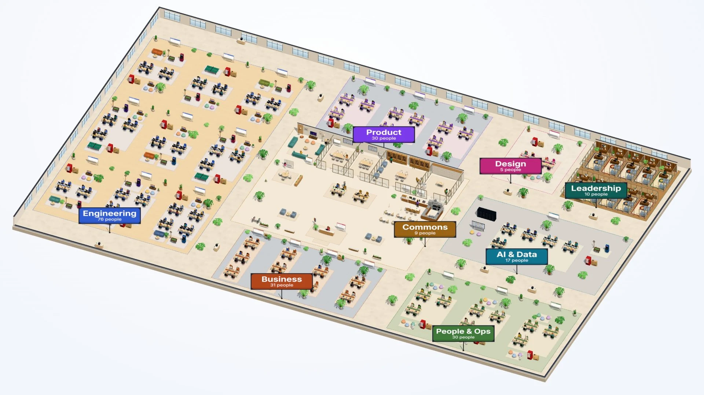
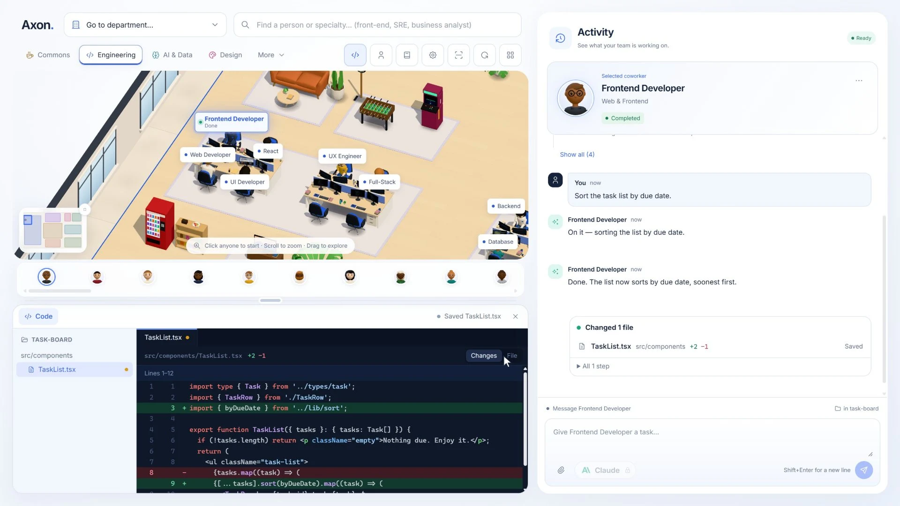

Make a large team legible
The campus groups specialists into departments. A spatial overview gives the user a way to understand the team before opening an individual desk or task.
An AI office you can actually work in.
 View full concept
View full concept 
A chat thread becomes difficult to follow when multiple specialists, files and tasks are involved. Axon gives that work a spatial home, while keeping the actual editing and approval process explicit.
I built across the desktop shell, procedural campus, provider integrations and file-review workflow. The result connects a visible office of specialist roles to a practical editor and streaming conversation workspace.
TypeScript · Electron · React · Three.js · Zustand · MCP
The campus groups specialists into departments. A spatial overview gives the user a way to understand the team before opening an individual desk or task.
File access is bounded to the selected workspace. Proposed edits go through diff review, with native confirmation for changes and retained versions for undo.
A sandboxed Electron renderer talks through an explicit preload API. Provider streaming, document parsing and local persistence stay behind clear boundaries instead of being mixed into the visual scene.
The campus shares a workspace with files, task activity and code review. A proposed change stays inspectable before it becomes a saved edit.

View full captureThe repository documents provider streaming, workspace retrieval, diff approvals and versioned local JSON persistence. End-to-end validation uses a local mock provider. Live paid-provider validation and production distribution are still separate steps.
Explore the repository